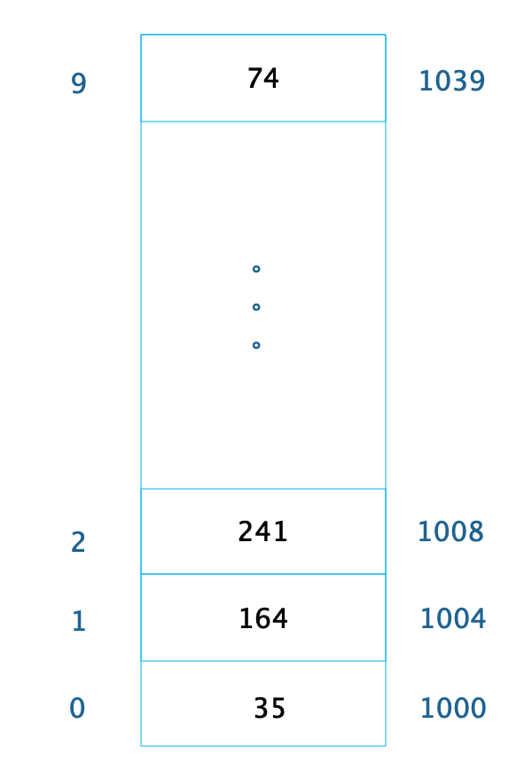
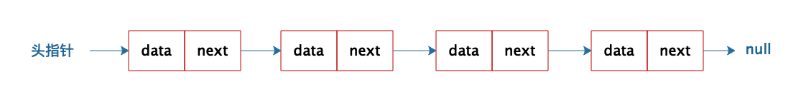
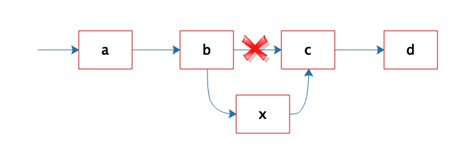
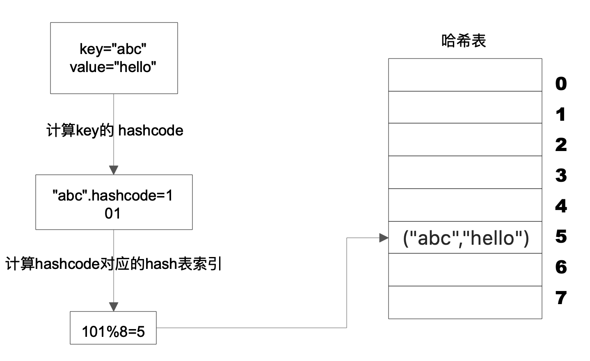
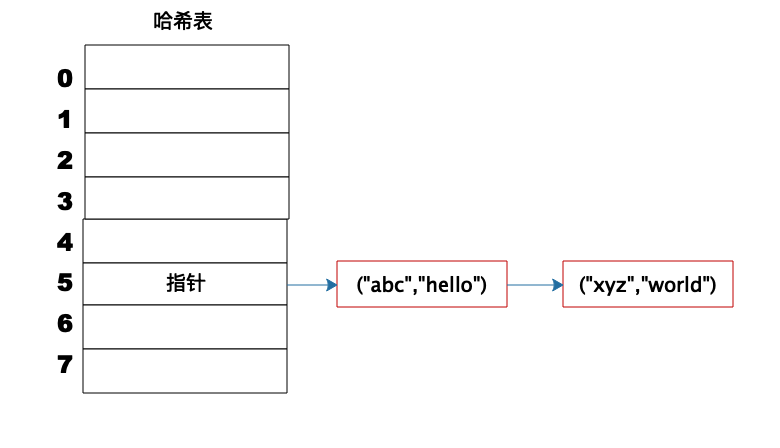
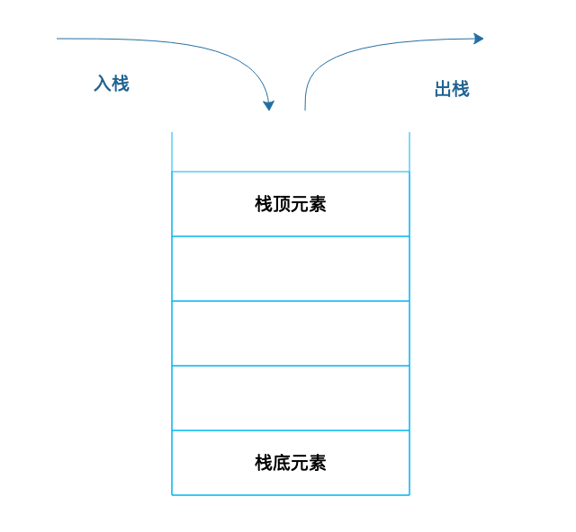
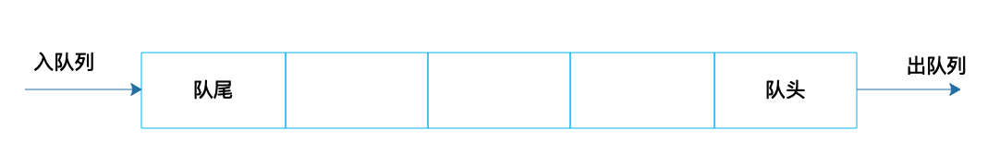
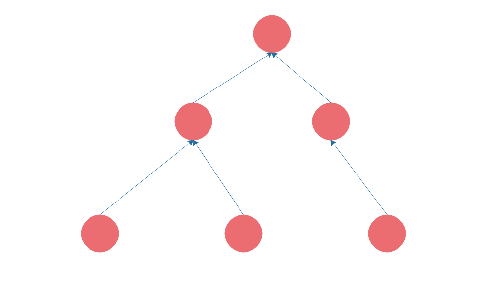
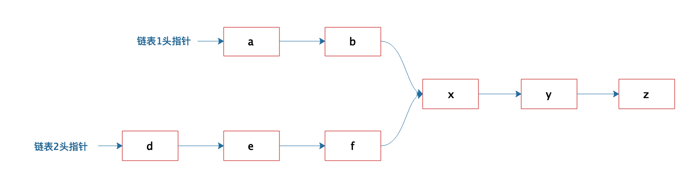

- 00 开篇词 掌握软件开发技术的第一性原理.md.html
- 01 程序运行原理：程序是如何运行又是如何崩溃的？.md.html
- 02 数据结构原理：Hash表的时间复杂度为什么是O(1)？.md.html
- 03 Java虚拟机原理：JVM为什么被称为机器（machine）？.md.html
- 04 网络编程原理：一个字符的互联网之旅.md.html
- 05 文件系统原理：如何用1分钟遍历一个100TB的文件？.md.html
- 06 数据库原理：为什么PrepareStatement性能更好更安全？.md.html
- 07 答疑 Java Web程序的运行时环境到底是怎样的？.md.html
- 07 编程语言原理：面向对象编程是编程的终极形态吗？.md.html
- 08 软件设计的方法论：软件为什么要建模？.md.html
- 09 软件设计实践：如何使用UML完成一个设计文档？.md.html
- 10 软件设计的目的：糟糕的程序员比优秀的程序员差在哪里？.md.html
- 11 软件设计的开闭原则：如何不修改代码却能实现需求变更？.md.html
- 12 软件设计的依赖倒置原则：如何不依赖代码却可以复用它的功能？.md.html
- 13 软件设计的里氏替换原则：正方形可以继承长方形吗？.md.html
- 14 软件设计的单一职责原则：为什么说一个类文件打开最好不要超过一屏？.md.html
- 15 软件设计的接口隔离原则：如何对类的调用者隐藏类的公有方法？.md.html
- 16 设计模式基础：不会灵活应用设计模式，你就没有掌握面向对象编程.md.html
- 17 设计模式应用：编程框架中的设计模式.md.html
- 18 反应式编程框架设计：如何使程序调用不阻塞等待，立即响应？.md.html
- 19 组件设计原则：组件的边界在哪里？.md.html
- 20 答疑 对于设计模式而言，场景到底有多重要？.md.html
- 20 领域驱动设计：35岁的程序员应该写什么样的代码？.md.html
- 21 分布式架构：如何应对高并发的用户请求.md.html
- 22 缓存架构：如何减少不必要的计算？.md.html
- 23 异步架构：如何避免互相依赖的系统间耦合？.md.html
- 24 负载均衡架构：如何用10行代码实现一个负载均衡服务？.md.html
- 25 数据存储架构：如何改善系统的数据存储能力？.md.html
- 26 搜索引擎架构：如何瞬间完成海量数据检索？.md.html
- 27 微服务架构：微服务究竟是灵丹还是毒药？.md.html
- 28 高性能架构：除了代码，你还可以在哪些地方优化性能？.md.html
- 29 高可用架构：我们为什么感觉不到淘宝应用升级时的停机？.md.html
- 30 安全性架构：为什么说用户密码泄漏是程序员的锅？.md.html
- 31 大数据架构：大数据技术架构的思想和原理是什么？.md.html
- 32 AI与物联网架构：从智能引擎到物联网平台.md.html
- 33 区块链技术架构：区块链到底能做什么？.md.html
- 33 答疑 互联网需要解决的技术问题是什么？.md.html
- 34 技术修炼之道：同样工作十几年，为什么有的人成为大厂架构师，有的人失业？.md.html
- 35 技术进阶之道：你和这个星球最顶级的程序员差几个等级？.md.html
- 36 技术落地之道：你真的知道自己要解决的问题是什么吗？.md.html
- 37 技术沟通之道：如何解决问题？.md.html
- 38 技术管理之道：你真的要转管理吗？.md.html
- 38 答疑 工作中的交往和沟通，都有哪些小技巧呢？.md.html
- 加餐 软件设计文档示例模板.md.html
- 结束语 期待未来的你，成为优秀的软件架构师.md.html
- 捐赠
02 数据结构原理：Hash表的时间复杂度为什么是O(1)？
大概十年前，我在阿里巴巴工作的时候，曾经和另一个面试官一起进行一场技术面试，面试过程中我问了一个问题：Hash表的时间复杂度为什么是O(1)？候选人没有回答上来。面试结束后我和另一个面试官有了分歧，我觉得这个问题没有回答上来是不可接受的。而他则觉得，这个问题有一点难度，回答不上来不说明什么。
因为有了这次争执，后来这个问题成了我面试时的必考题。此后十年间，我用这个问题面试了大约上千人，这些面试经历让我更加坚定了一个想法：这个问题就是候选人技术水平的一个分水岭，是证明一个技术人员是否具有必备专业技能和技术悟性的一个门槛。这个槛过不去是不可接受的。
为什么呢？我很难相信，如果基本的数据结构没有掌握好，如何能开发好一个稍微复杂一点的程序？
要了解Hash表，需要先从数组说起。
数组
数组是最常用的数据结构，创建数组必须要内存中一块连续的空间，并且数组中必须存放相同的数据类型。比如我们创建一个长度为10，数据类型为整型的数组，在内存中的地址是从1000开始，那么它在内存中的存储格式如下。
 由于每个整型数据占据4个字节的内存空间，因此整个数组的内存空间地址是1000～1039，根据这个，我们就可以轻易算出数组中每个数据的内存下标地址。利用这个特性，我们只要知道了数组下标，也就是数据在数组中的位置，比如下标2，就可以计算得到这个数据在内存中的位置1008，从而对这个位置的数据241进行快速读写访问，时间复杂度为O(1)。
随机快速读写是数组的一个重要特性，但是要随机访问数据，必须知道数据在数组中的下标。如果我们只是知道数据的值，想要在数组中找到这个值，那么就只能遍历整个数组，时间复杂度为O(N)。
链表
不同于数组必须要连续的内存空间，链表可以使用零散的内存空间存储数据。不过，因为链表在内存中的数据不是连续的，所以链表中的每个数据元素都必须包含一个指向下一个数据元素的内存地址指针。如下图，链表的每个元素包含两部分，一部分是数据，一部分是指向下一个元素的地址指针。最后一个元素指向null，表示链表到此为止。
 因为链表是不连续存储的，要想在链表中查找一个数据，只能遍历链表，所以链表的查找复杂度总是O(N)。
但是正因为链表是不连续存储的，所以在链表中插入或者删除一个数据是非常容易的，只要找到要插入（删除）的位置，修改链表指针就可以了。如图，想在b和c之间插入一个元素x，只需要将b指向c的指针修改为指向x，然后将x的指针指向c就可以了。
 相比在链表中轻易插入、删除一个元素这种简单的操作，如果我们要想在数组中插入、删除一个数据，就会改变数组连续内存空间的大小，需要重新分配内存空间，这样要复杂得多。
Hash表
前面说过，对数组中的数据进行快速访问必须要通过数组的下标，时间复杂度为O(1)。如果只知道数据或者数据中的部分内容，想在数组中找到这个数据，还是需要遍历数组，时间复杂度为O(N)。
事实上，知道部分数据查找完整数据的需求在软件开发中会经常用到，比如知道了商品ID，想要查找完整的商品信息；知道了词条名称，想要查找百科词条中的详细信息等。
这类场景就需要用到Hash表这种数据结构。Hash表中数据以Key、Value的方式存储，上面例子中，商品ID和词条名称就是Key，商品信息和词条详细信息就是Value。存储的时候将Key、Value写入Hash表，读取的时候，只需要提供Key，就可以快速查找到Value。
Hash表的物理存储其实是一个数组，如果我们能够根据Key计算出数组下标，那么就可以快速在数组中查找到需要的Key和Value。许多编程语言支持获得任意对象的 HashCode，比如Java 语言中 HashCode 方法包含在根对象 Object 中，其返回值是一个 Int。我们可以利用这个Int类型的HashCode计算数组下标。最简单的方法就是余数法，使用 Hash 表的数组长度对 HashCode 求余， 余数即为 Hash 表数组的下标，使用这个下标就可以直接访问得到 Hash 表中存储的 Key、Value。
 上图这个例子中，Key是字符串abc，Value是字符串hello。我们先计算Key的哈希值，得到101这样一个整型值。然后用101对8取模，这个8是哈希表数组的长度。101对8取模余5，这个5就是数组的下标，这样就可以把(“abc”,“hello”)这样一个Key、Value值存储在下标为5的数组记录中。
当我们要读取数据的时候，只要给定Key abc，还是用这样一个算法过程，先求取它的HashCode 101，然后再对8取模，因为数组的长度不变，对8取模以后依然是余5，那么我们到数组下标中去找5的这个位置，就可以找到前面存储进去的abc对应的Value值。
但是如果不同的Key计算出来的数组下标相同怎么办？HashCode101对8取模余数是5，HashCode109对8取模余数还是5，也就是说，不同的Key有可能计算得到相同的数组下标，这就是所谓的Hash冲突，解决Hash冲突常用的方法是链表法。
事实上，(“abc”,“hello”)这样的Key、Value数据并不会直接存储在Hash表的数组中，因为数组要求存储固定数据类型，主要目的是每个数组元素中要存放固定长度的数据。所以，数组中存储的是Key、Value数据元素的地址指针。一旦发生Hash冲突，只需要将相同下标，不同Key的数据元素添加到这个链表就可以了。查找的时候再遍历这个链表，匹配正确的Key。
如下图：
 因为有Hash冲突的存在，所以“Hash表的时间复杂度为什么是O(1)？”这句话并不严谨，极端情况下，如果所有Key的数组下标都冲突，那么Hash表就退化为一条链表，查询的时间复杂度是O(N)。但是作为一个面试题，“Hash表的时间复杂度为什么是O(1)”是没有问题的。
栈
数组和链表都被称为线性表，因为里面的数据是按照线性组织存放的，每个数据元素的前面只能有一个（前驱）数据元素，后面也只能有一个（后继）数据元素，所以称为线性表。但是对数组和链表的操作可以是随机的，可以对其上任何元素进行操作，如果对操作方式加以限制，就形成了新的数据结构。
栈就是在线性表的基础上加了这样的操作限制条件：后面添加的数据，在删除的时候必须先删除，即通常所说的“后进先出”。我们可以把栈可以想象成一个大桶，往桶里面放食物，一层一层放进去，如果要吃的时候，必须从最上面一层吃，吃了几层后，再往里放食物，还是从当前的最上面一层放起。
 栈在线性表的基础上增加了操作限制，具体实现的时候，因为栈不需要随机访问、也不需要在中间添加、删除数据，所以可以用数组实现，也可以用链表实现。那么在顺序表的基础上增加操作限制有什么好处呢？
我们上篇提到的程序运行过程中，方法的调用需要用栈来管理每个方法的工作区，这样，不管方法如何嵌套调用，栈顶元素始终是当前正在执行的方法的工作区。这样，事情就简单了。而简单，正是我们做软件开发应该努力追求的一个目标。
队列
队列也是一种操作受限的线性表，栈是后进先出，而队列是先进先出。
 在软件运行期，经常会遇到资源不足的情况：提交任务请求线程池执行，但是线程已经用完了，任务需要放入队列，先进先出排队执行；线程在运行中需要访问数据库，数据库连接有限，已经用完了，线程进入阻塞队列，当有数据库连接释放的时候，从阻塞队列头部唤醒一个线程，出队列获得连接访问数据库。
我在上面讲堆栈的时候，举了一个大桶放食物的例子，事实上，如果用这种方式存放食物，有可能最底下食物永远都吃不到，最后过期了。
现实中也是如此，超市在货架上摆放食品的时候，其实是按照队列摆放的，而不是堆栈摆放的。工作人员在上架新食品的时候，总是把新食品摆在后面，使食品成为一个队列，以便让以前上架的食品被尽快卖出。
树
数组、链表、栈、队列都是线性表，也就是每个数据元素都只有一个前驱，一个后继。而树则是非线性表，树是这样的。
 软件开发中，也有很多地方用到树，比如我们要开发一个OA系统，部门的组织结构就是一棵树；我们编写的程序在编译的时候，第一步就是将程序代码生成抽象语法树。传统上树的遍历使用递归的方式，而我个人更喜欢用设计模式中的组合模式进行树的遍历，具体我将会在设计模式部分详细讨论。
小结
这是一篇关于数据结构的专栏文章，面试中问数据结构是一个非常有意思的话题，很多拥有绚丽简历和多年工作经验的候选人在数据结构的问题上翻了船，这些人有时候会解释说，这些知识都是大学时学过的，工作这些年用不着，记不太清楚了。
事实上，我很难相信，如果这些基本数据结构没有掌握好，如何能开发好一个稍微复杂一点的程序。但欣慰的是，在这些年的面试过程中，我发现候选者中能够正确回答基本数据结构问题的比例越来越高了，我也越来越坚定用数据结构问题当做是否跨过专业工程师门槛的试金石。作为一个专业软件工程师，不管有多少年经验，说不清楚基础数据结构的工作原理是不能接受的。
思考题
链表结构虽然简单，但是各种组合变换操作却可以很复杂。关于链表的操作也是面试官最喜欢问的数据结构问题之一，我在面试过程中喜欢问的一个链表问题是：
有两个单向链表，这两个单向链表有可能在某个元素合并，如下图所示的这样，也可能不合并。现在给定两个链表的头指针，如何快速地判断这两个链表是否合并？如果合并，找到合并的元素，也就是图中的x元素。
 关于这道题，你的答案是什么呢？
欢迎你在评论区写下你的思考，我会和你一起交流，也欢迎把这篇文章分享给你朋友或者同事，一起交流一下。
© 2019 - 2023 Liangliang Lee. Powered by gin and hexo-theme-book.